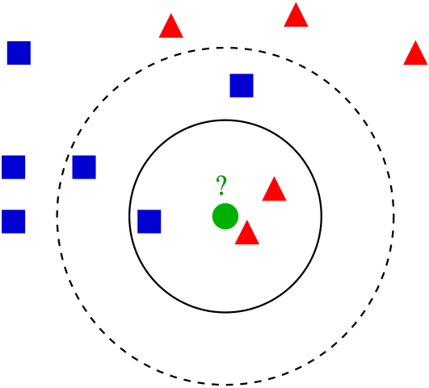
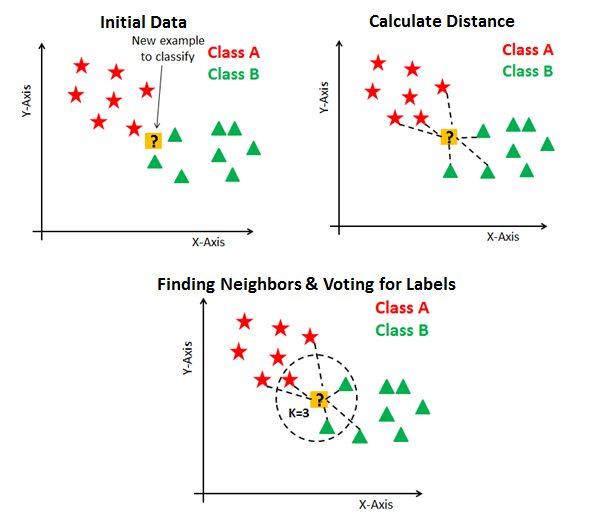

ML - Classification
Contents
ML - Classification#
import numpy as np
import pandas as pd
import matplotlib.pyplot as plt
import seaborn as sns
from pathlib import Path
from sklearn import datasets
sns.set_theme(style="whitegrid")
Motivation#
Space Shuttle Challenger Disaster

By Kennedy Space Center
# filepath = Path().resolve().parent / "data" / "challenger.txt" # If you are running locally
filepath = "https://raw.githubusercontent.com/aoguedao/neural_computing_workshop/main/data/Challenger.txt"
challenger = pd.DataFrame(
np.loadtxt(filepath, skiprows=1).astype(int),
columns=["temp_f", "nm_bad_rings"]
)
challenger.head()
| temp_f | nm_bad_rings | |
|---|---|---|
| 0 | 53 | 3 |
| 1 | 56 | 1 |
| 2 | 57 | 1 |
| 3 | 63 | 0 |
| 4 | 66 | 0 |
fig, ax = plt.subplots(figsize=(8, 6))
sns.scatterplot(
x="temp_f",
y="nm_bad_rings",
data=challenger,
ax=ax
)
ax.set_title("Number of bad rings vs temperature")
fig.show()
/tmp/ipykernel_5760/3810344009.py:9: UserWarning: Matplotlib is currently using module://matplotlib_inline.backend_inline, which is a non-GUI backend, so cannot show the figure.
fig.show()
challenger = challenger.assign(
failure=lambda x: x["nm_bad_rings"].ne(0),
is_failure=lambda x: x["failure"].astype(int),
)
fig, ax = plt.subplots(figsize=(8, 6))
sns.scatterplot(
x="temp_f",
y="is_failure",
hue="failure",
data=challenger,
ax=ax
)
ax.set_title("Number of bad rings vs temperature")
fig.show()
/tmp/ipykernel_5760/2432193437.py:10: UserWarning: Matplotlib is currently using module://matplotlib_inline.backend_inline, which is a non-GUI backend, so cannot show the figure.
fig.show()
Logistic Regression#
Similar to Linear Regression we are looking for a model that approximates $\( Y \approx f_\beta(X) \)$
where $\( X = \begin{bmatrix} 1 & x^{(1)}_1 & \dots & x^{(1)}_p \\ 1 & x^{(2)}_1 & \dots & x^{(2)}_p \\ \vdots & \vdots & & \vdots \\ 1 & x^{(n)}_1 & \dots & x^{(n)}_p \end{bmatrix} \quad , \quad Y = \begin{bmatrix}y^{(1)} \\ y^{(2)} \\ \vdots \\ y^{(m)}\end{bmatrix} \quad \text{and} \quad \beta = \begin{bmatrix}\beta_0 \\ \beta_1 \\ \vdots \\ \beta_n\end{bmatrix} \)$
but we want to train a non-linear function
and to minimize the cost function $\(J(\beta) = \frac{1}{2} \sum_{i=1}^{n} \left( y^{(i)} - f_{\beta}(x^{(i)})\right)^2\)$
Notice that we can write
where \(g(z)\) is a sigmoid function,
Decision#
def sigmoid(z):
return 1 / (1 + np.exp(-z))
x = np.arange(-5, 5, 0.1)
y = sigmoid(x)
fig, ax = plt.subplots(figsize=(8, 6))
ax.plot(x, y)
ax.axhline(y=0.5, xmin=-5, xmax=5, color="red")
fig.show()
/tmp/ipykernel_5760/966449380.py:6: UserWarning: Matplotlib is currently using module://matplotlib_inline.backend_inline, which is a non-GUI backend, so cannot show the figure.
fig.show()
Optimization#
First of all, the derivative of this sigmoid function is easy to compute.
In order to compute the jacobian we need the partial derivatives,
then
where \(\odot\) is a element-wise multiplication, usually called Hadamard product.
Then, the gradient descent algorithm for the binary logistic regression is
Implementation#
from sklearn.linear_model import LogisticRegression
X = challenger[["temp_f"]]
y = challenger["is_failure"]
model = LogisticRegression()
model.fit(X, y)
LogisticRegression()In a Jupyter environment, please rerun this cell to show the HTML representation or trust the notebook.
On GitHub, the HTML representation is unable to render, please try loading this page with nbviewer.org.
LogisticRegression()
model.coef_.T
array([[-0.17014123]])
%%timeit
LogisticRegression().fit(X, y)
1.22 ms ± 6.62 µs per loop (mean ± std. dev. of 7 runs, 1,000 loops each)
model.score(X, y)
0.7916666666666666
# Predicting values
y_pred = model.predict(X)
y_pred
array([1, 1, 1, 1, 0, 0, 0, 0, 0, 0, 0, 0, 0, 0, 0, 0, 0, 0, 0, 0, 0, 0,
0, 0])
Multi-Label Classification#
digits_X, digits_y = datasets.load_digits(return_X_y=True, as_frame=True)
digits = pd.concat([digits_X, digits_y], axis=1)
digits.head()
| pixel_0_0 | pixel_0_1 | pixel_0_2 | pixel_0_3 | pixel_0_4 | pixel_0_5 | pixel_0_6 | pixel_0_7 | pixel_1_0 | pixel_1_1 | ... | pixel_6_7 | pixel_7_0 | pixel_7_1 | pixel_7_2 | pixel_7_3 | pixel_7_4 | pixel_7_5 | pixel_7_6 | pixel_7_7 | target | |
|---|---|---|---|---|---|---|---|---|---|---|---|---|---|---|---|---|---|---|---|---|---|
| 0 | 0.0 | 0.0 | 5.0 | 13.0 | 9.0 | 1.0 | 0.0 | 0.0 | 0.0 | 0.0 | ... | 0.0 | 0.0 | 0.0 | 6.0 | 13.0 | 10.0 | 0.0 | 0.0 | 0.0 | 0 |
| 1 | 0.0 | 0.0 | 0.0 | 12.0 | 13.0 | 5.0 | 0.0 | 0.0 | 0.0 | 0.0 | ... | 0.0 | 0.0 | 0.0 | 0.0 | 11.0 | 16.0 | 10.0 | 0.0 | 0.0 | 1 |
| 2 | 0.0 | 0.0 | 0.0 | 4.0 | 15.0 | 12.0 | 0.0 | 0.0 | 0.0 | 0.0 | ... | 0.0 | 0.0 | 0.0 | 0.0 | 3.0 | 11.0 | 16.0 | 9.0 | 0.0 | 2 |
| 3 | 0.0 | 0.0 | 7.0 | 15.0 | 13.0 | 1.0 | 0.0 | 0.0 | 0.0 | 8.0 | ... | 0.0 | 0.0 | 0.0 | 7.0 | 13.0 | 13.0 | 9.0 | 0.0 | 0.0 | 3 |
| 4 | 0.0 | 0.0 | 0.0 | 1.0 | 11.0 | 0.0 | 0.0 | 0.0 | 0.0 | 0.0 | ... | 0.0 | 0.0 | 0.0 | 0.0 | 2.0 | 16.0 | 4.0 | 0.0 | 0.0 | 4 |
5 rows × 65 columns
sns.set_style("white")
digit_images = datasets.load_digits().images
i = 42
plt.imshow(digit_images[i], cmap=plt.cm.gray)
<matplotlib.image.AxesImage at 0x7ff027e97410>
model = LogisticRegression(max_iter=1000)
model.fit(digits_X, digits_y)
/home/alonsolml/mambaforge/envs/nc-book/lib/python3.11/site-packages/sklearn/linear_model/_logistic.py:458: ConvergenceWarning: lbfgs failed to converge (status=1):
STOP: TOTAL NO. of ITERATIONS REACHED LIMIT.
Increase the number of iterations (max_iter) or scale the data as shown in:
https://scikit-learn.org/stable/modules/preprocessing.html
Please also refer to the documentation for alternative solver options:
https://scikit-learn.org/stable/modules/linear_model.html#logistic-regression
n_iter_i = _check_optimize_result(
LogisticRegression(max_iter=1000)In a Jupyter environment, please rerun this cell to show the HTML representation or trust the notebook.
On GitHub, the HTML representation is unable to render, please try loading this page with nbviewer.org.
LogisticRegression(max_iter=1000)
model.predict(digits_X.loc[[i], :])
array([1])
from sklearn.metrics import confusion_matrix, ConfusionMatrixDisplay
y_pred = model.predict(digits_X)
confusion_matrix(digits_y, y_pred, labels=model.classes_)
array([[178, 0, 0, 0, 0, 0, 0, 0, 0, 0],
[ 0, 182, 0, 0, 0, 0, 0, 0, 0, 0],
[ 0, 0, 177, 0, 0, 0, 0, 0, 0, 0],
[ 0, 0, 0, 183, 0, 0, 0, 0, 0, 0],
[ 0, 0, 0, 0, 181, 0, 0, 0, 0, 0],
[ 0, 0, 0, 0, 0, 182, 0, 0, 0, 0],
[ 0, 0, 0, 0, 0, 0, 181, 0, 0, 0],
[ 0, 0, 0, 0, 0, 0, 0, 179, 0, 0],
[ 0, 0, 0, 0, 0, 0, 0, 0, 174, 0],
[ 0, 0, 0, 0, 0, 0, 0, 0, 0, 180]])
ConfusionMatrixDisplay.from_estimator(model, digits_X, digits_y)
<sklearn.metrics._plot.confusion_matrix.ConfusionMatrixDisplay at 0x7ff0287fa510>
from sklearn.metrics import classification_report
y_true = digits_y.values
y_pred = model.predict(digits_X)
print(
classification_report(
y_true,
y_pred,
target_names=[str(x) for x in model.classes_]
)
)
precision recall f1-score support
0 1.00 1.00 1.00 178
1 1.00 1.00 1.00 182
2 1.00 1.00 1.00 177
3 1.00 1.00 1.00 183
4 1.00 1.00 1.00 181
5 1.00 1.00 1.00 182
6 1.00 1.00 1.00 181
7 1.00 1.00 1.00 179
8 1.00 1.00 1.00 174
9 1.00 1.00 1.00 180
accuracy 1.00 1797
macro avg 1.00 1.00 1.00 1797
weighted avg 1.00 1.00 1.00 1797
More Algorithms#
K Nearest Neighbors#
K Nearest Neighbors (kNN) is a non-parametric algorithm. Once the hyperparameter \(k\) has been fixed, there are no more parameters. The idea is simple: the output label is the most common label among the 𝑘 nearest neighbors. In the following example, if \(k=3\) the green circle is labeled as red, but if \(k=5\) then it is labeled as blue.

{kind=link}
The algorithm is really simple. The training phase consists only of storing the feature matrix and its labels.
For the prediction phase we need to compute the distance with every training vector and then find the nearest neighbors.

from sklearn.neighbors import KNeighborsClassifier
k = 5
knn = KNeighborsClassifier(n_neighbors=k)
knn.fit(digits_X, digits_y)
KNeighborsClassifier()In a Jupyter environment, please rerun this cell to show the HTML representation or trust the notebook.
On GitHub, the HTML representation is unable to render, please try loading this page with nbviewer.org.
KNeighborsClassifier()
ConfusionMatrixDisplay.from_estimator(knn, digits_X, digits_y)
<sklearn.metrics._plot.confusion_matrix.ConfusionMatrixDisplay at 0x7ff0278aa090>